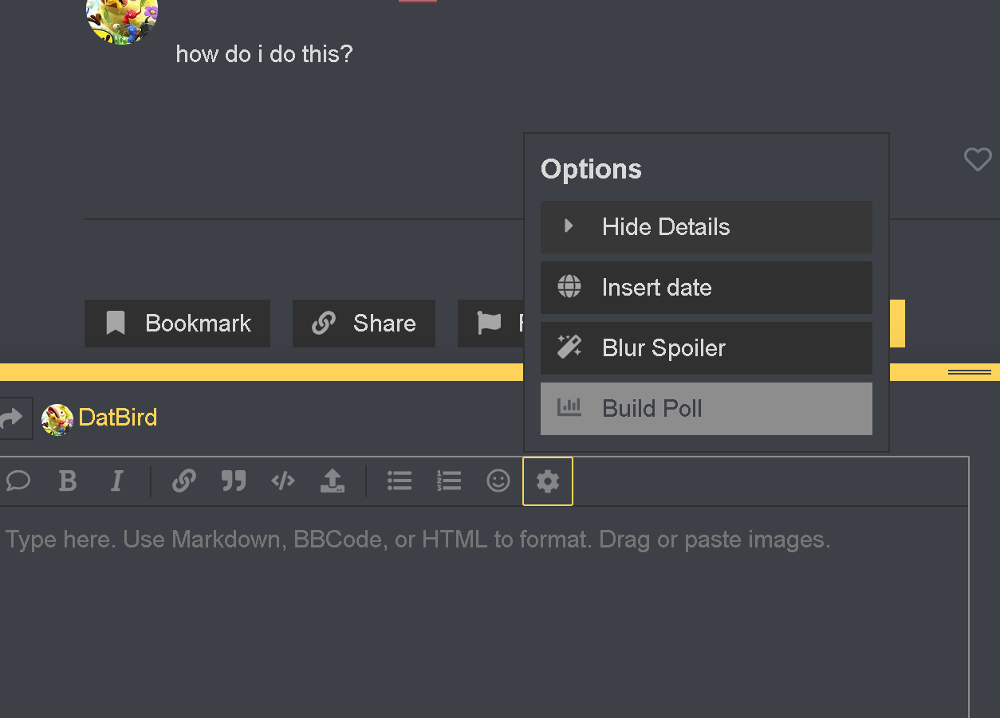

oh
any non-unique
has to be the same class (can’t buy 2 alts from different classes)
F u c k c u l t a l t s
1 Like
They chose the Surgeon for Solic
@Alice In games, can the starting cult normally talk before the start of the game and when the cult leader is choosing alts?
@edit: They can’t.
I can still totally see him picking it to try to “confirm” both of them while thinking that no one would think about their plan, but only after asking Alice 80 times how do the cult alts work.
Hey Solic, say hi to your cultlings for me. I know that you totally have an Apostle 
@Marluxion Please tell me why the fuck you are giving the proven scum a second chance.
Stop asking to be investigated. It is useless since you can’t be the convert if you are going to dethrone Frost and at the same time gladiate, and if you would be converted then the check wouldn’t do horseshit.
nvmd you’re asking for a clear mind
Starting non-CL cult died N1 so what’s the point?
Marluxion have to deliver all his Magistrate abilities or he risk getting lynched.
Well I called him a LAMIST for a reason.
/exe
D2 Reads: The WALL edition
Beginning of the Day everyone was willing to vote Rouge. Other than Baz who says they haven’t done anything wrong. I was confused on why I never was added to the night chat. After that Marl comes with the accusation of Rouge visiting Solic which he later says
Now this really doesn’t bode well for my opinion on Marl because why would you lie about this. Then after a long wait Rouge shows up saying they didn’t do anything last night since they said they would be blocked anyway. Says he’s Cabalist and hasn’t read the class list. Says hes easily confirmable and that he could use a day ability to prove it.
Not sure if this ever happened. @Rogue did you? Then we got the classic Baz
Then he says this
@bazingaboy what do you mean by this? Everyone then continues to pardon Rouge. Then ur fake cop is blown by Rouge for calling you out on the wrong enemy class type. I predicted this because we did the same thing to Isaac day1. Marg then gets pushed and calls herself a nightmare and a persistent queen.
Then Marl comes back with
which is agreeable, but I pardoned also so I guess im dumb also. He then says he has prestige which shoots a hole in his Cabalist claim.
he said he was presuming he was going to be occupied by something Geyde said so thats why he no actioned. Not believable but still. Then after getting mechanically caught he says he is the
then they get called out again. Then claims for the THIRD time
Then Frost gets mad that Marl wants him dead.
Honestlly I didn’t see it either
Me 2 Baz, Me 2
Weird set of posts by Luxy.
If Max hasn’t said something by the end of Day 2 I think he might be scum
Marg has me scared with this answer. The fact she won’t tell is off putting.
Isaac with the great play. That gets no response. Sorry Isaac.
the confiration of Marl
well yeah because this is Byzantium, obviously
agreed but supposedly
this feels like OMGUS
You can’t use this logic because once its known your a bad convert people won’t do it, and since its a bad idea and no one would use it. People would use it again. Basically no one is never a bad convert.
I have already said my opinions on this
- no check is a waste until you are confirmed
- As said above
- Good point there but idk if there are any in this format
- yeah idk
Marcus goes on trial
feels genuine but Marcus was also really defending Rouge
sadly i dont think hes showing up
Now for final reads:
I think you got my soft from before so you should know what i am.
Town: Marl
Townleans: Geyde, Isaac,
Null: Luxy, Hjask, Priestess, Baz, Squid, Merc
Scumleans: Frost, Marg, Maxi, Marc
Scum: Rouge (hopefully they can prove themselves, or help Marl)
1 Like
starting rit died n1
therefore any action i make that is confirmable in some way makes me confirmed not CL unless you think i’m a n1 convert (which hasn’t happened yet)
therefore your logic is still wrong
also i would like to point out that you have a lot of scumleans for d2, especially since a ritualist just died
only scum have things to gain by putting down that many scumleans
Can you put this wallpost in spoilers
I didn’t out until you pardoned him because I was asleep.
It can be from any non unique class of their type. Solic is confirmed starting cult so we don’t need to worry
I want to become Emperor.
how do i do this?

pretty sure she meant details
which is
[details]
ahsd
[/details]
just did both in case
I was making a joke about Overwatch FM
Also I can’t quote ur post can you unblur it
1 Like